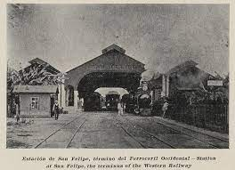
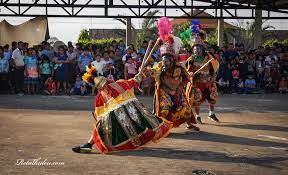
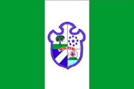

Retalhuleu es uno de los veintidós departamentos que conforman Guatemala, ubicado en la región suroccidental del país, limita al norte con Quetzaltenango, al sur con el Océano Pacífico, al este con Suchitepéquez; y al oeste San Marcos. Se divide administrativamente por 9 municipios, incluyendo su cabecera: Ciudad de Retalhuleu. Este departamento posee un clima cálido todo el año, ya que sus temperaturas van de los 22 a los 34 °C. Actualmente, Retalhuleu se encuentra entre la lista de los diez departamentos más importantes de Guatemala.
Historia
Retalhuleu departamento de Guatemala, que por sus habitantes es también descrito como La Capital del Mundo.
Su etimología parece provenir de las voces quichés retal que significa «señal», hul que significa «hoyo» y uleu que significa «tierra», lo que quiere decir «hoyo en la tierra», con los elementos del idioma quiché, podemos decir que esto se traduce en Señal de la Tierra.
Existe también la leyenda bastante generalizada pero sin confirmación histórica conocida, que habiendo solicitado los indígenas al conquistador Pedro de Alvarado que delimitase sus tierras, este se situó en un punto, requirió su espada y con la misma trazó una señal en el aire para dividir así las tierras. Se ha dicho que Alvarado señaló a la derecha todo el territorio Mam y a la izquierda el territorio Quiché, cuyo límite quedó justamente en el río Nil, cerca de la actual cabecera departamental de Retalhuleu.
En la época precolombina esta región fue ocupada por varios grupos. Según el doctor Shook supone que unos doscientos años después de Cristo, existió en el sitio llamado Acapán, cerca del Pacífico, un puerto marítimo con magníficas condiciones naturales, del cual partían embarcaciones rudimentarias con valiosos cargamentos de sal, productos agrícolas y tejidos provenientes del altiplano.
Retalhuleu perteneció un tiempo al corregimiento de Suchitepéquez. En 1581 el alcalde mayor, Juan de Estrada, pidió a la corona que fueran devueltos a Zapotitlán los pueblos que le quitaron para formar otros corregimientos suprimiéndose Atitlán, Tecpanatitlán y Quetzaltenango, quedando todos en jurisdicción de Zapotitlán. En el período hispánico el departamento fue dividido en dos zonas: La primera con predominio de la población indígena, observándose el cultivo del maíz y la segunda como zona del Pacífico la cual, desde los primeros tiempos de la dominación española, fue modificada por las plantaciones de carácter extranjero como la caña de azúcar, el añil y en tiempos más modernos la cochinilla y plantaciones de café.

Tradiciones
De Retalhuleu, la feria principal de este departamento es la que se celebra en la cabecera, y es del 2 al 12 de diciembre, siendo el día principal el 8, fecha en que la Iglesia Católica conmemora la Inmaculada Concepción de la Virgen María, Santa Patrona del lugar.

Comidas tipicas
En el departamento de Retalhuleu se puede encontrar una gran variedad de platillos típicos con el sazón propio de la region por lo cual este departamento tiene una gastronomía única entre sus principales platillos podemos encontrar los siguientes: Tamales guatemaltecos, La mojarra dorada El ceviche, El caldo de mariscos, El chojín retalteco, Jócon, receta de frijols rojos con carne,sopa de frijol,receta de enchiladas jarineras(guatemaltecas)
Bandera de Retahuleu
La Bandera del departamento de Retalhuleu
Está compuesta por tres franjas dos de color verde y una de color blanco en la cual en medio tiene el escudo de armas del departamento.
La franjas de color verde simboliza la sus atractivos y abundante naturaleza; representa sus playas y lugares turísticos que hacen de este departamento una de las mejores opciones para sus visitantes.
Simboliza sus sitios turísticos como los son Parque Arqueológico Nacional Takalik Abaj, La Cueva del Encanto, Museo Arqueológico de Retalhuleu Horacio Alejos León, Playa el Manchón, Playa Champerico, Playa Tulate, entre otros.
La franja de color blanca simboliza a sus pobladores y etnias indígenas que poblaron a este departamento desde su creación, en especial la cultura Olmeca Maya.
Por último, en medio se encuentra el escudo de armas del departamento, el cual tiene elementos fundamentales para el departamento, entre ellos se encuentran la palmera, ocho estrellas que simbolizan a sus municipios, cinco volcanes y un recuadro con tres franjas dos de color azul y una de color blanca.

Canciones de Retahuleu
Retalhuleu
Retalhuleu,
tierra cálida y bella
la calzada “Las Palmas”
te abanica y refresca
y te arrulla el Palmar.
Retalhuleu,
en tu puerto y su playa,
tu febril Champerico
encontré un paraíso
a la orilla del mar.
Cómo llevo grabados
tu palacio y el parque,
con tus calles hermosas
y tu alegre estación.
Tus mujeres bonitas,
capullitos fragantes,
inspiraron versos
de mi dulce canción.
Retalhuleu,
te acarician y riegan
varios ríos sonoros:
Samalá, Ocosito,
Sununá y el Nil.
Retalhuleu,
tus palmeras frondosas
se estremecen al viento
y refrescan y besan
con su suave vaivén…
¡Retalhuleu!Video sobre como se ve una de las cuantas zonas de Retahuleu.IdiomaEl idioma oficial es el Español. Ancestralmente sus habitantes se han comunicado en K'iché y Mam, idioma que persiste a la fecha en el habla de los nativos mayas, sobre todo en municipios como: San Felipe Retalhuleu, San Martín Zapotitlán, San Sebastián y Champerico.